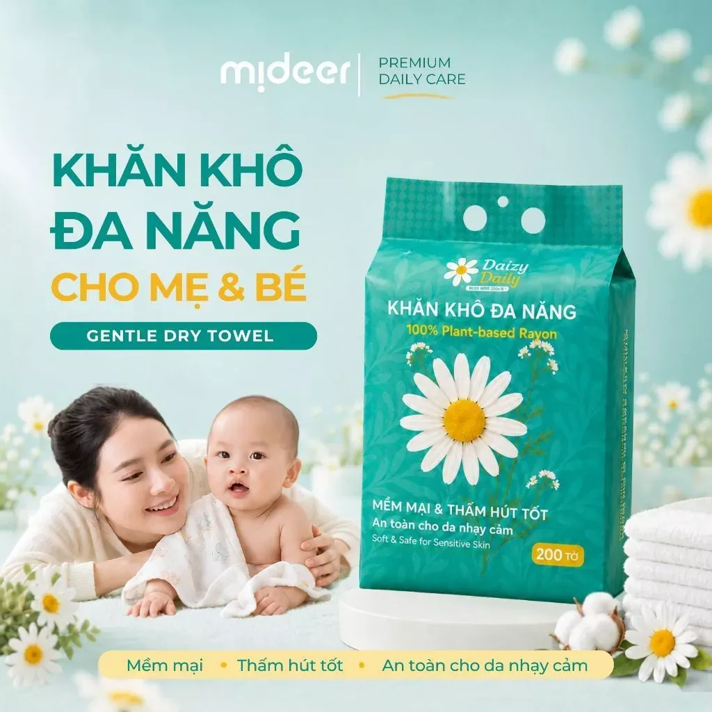
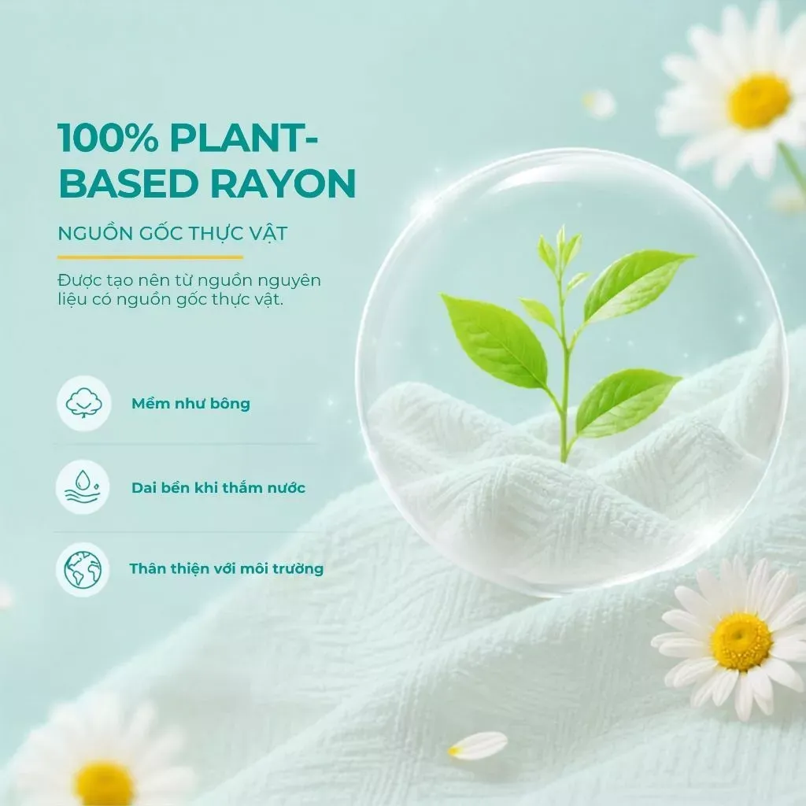
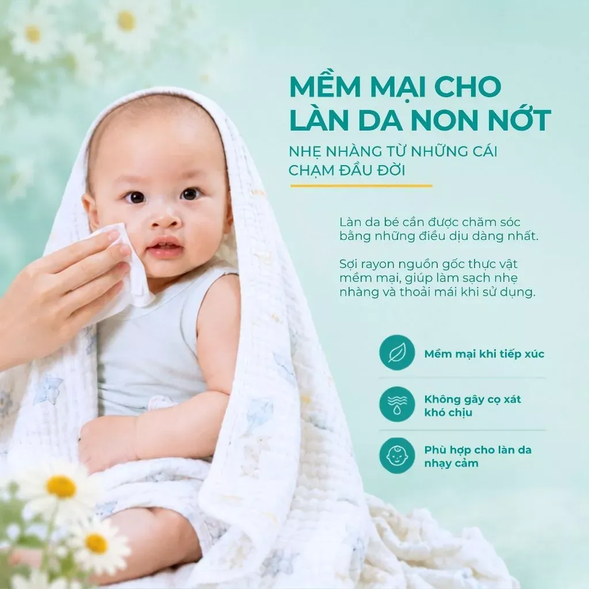
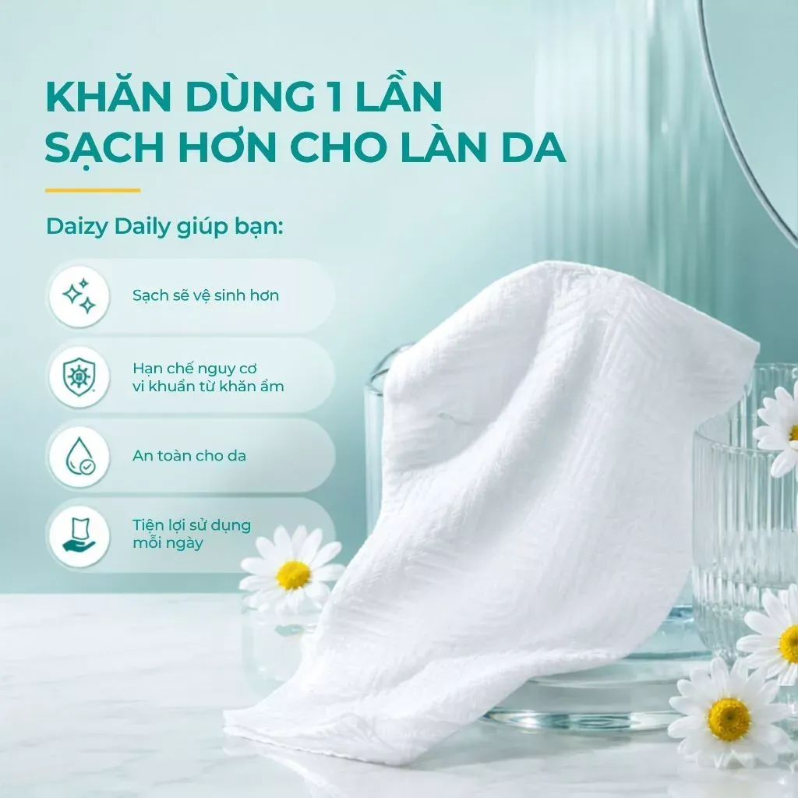
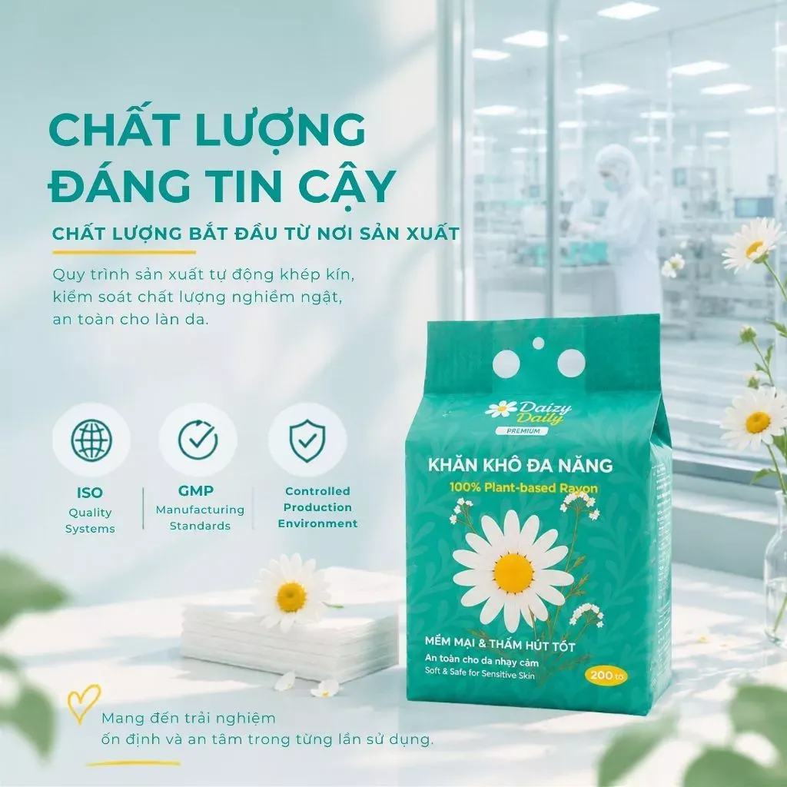
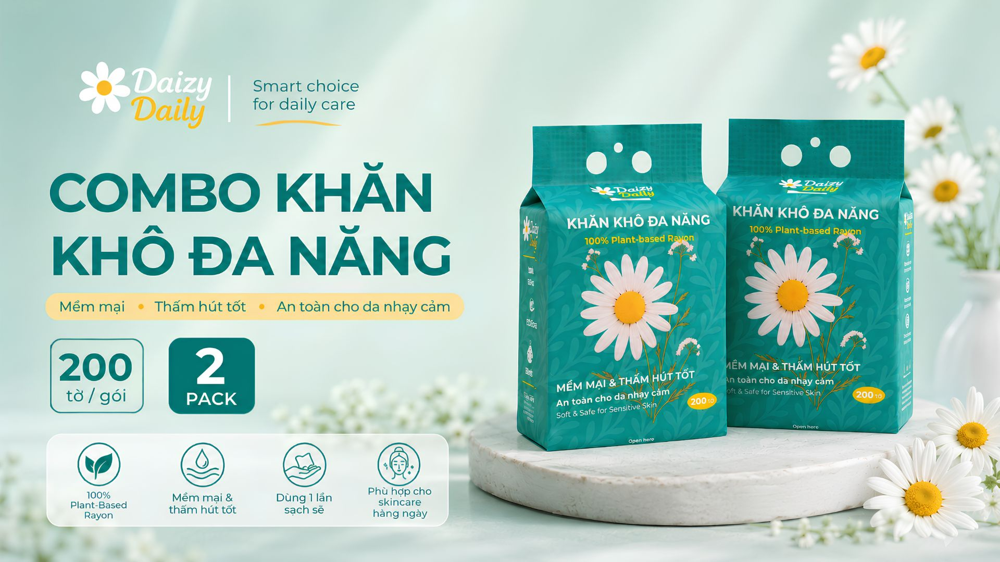

Khăn Khô Đa Năng Daizy Daily
Khăn khô đa năng 100% sợi Rayon nguồn gốc thực vật. Sợi tự nhiên siêu mềm mịn, thiết kế treo tiện lợi rút từng tờ và an toàn tuyệt đối cho làn da sơ sinh nhạy cảm.
- Mềm mịn 5D, không xơ sợi: Không gây trầy xước hay rát da mặt và da bé.
- Dai bền khi thấm nước: Dùng khô để lau mặt, hoặc nhúng nước ấm thay khăn ướt.
- An toàn thuần khiết: Không hương liệu, không cồn, không paraben, không chất tẩy trắng huỳnh quang.

Vì sao nên ngưng dùng khăn vải ẩm & khăn giấy thường?
Khăn Vải Truyền Thống & Giấy Thường
- Khăn mặt treo nhà tắm dễ tích tụ vi khuẩn, nấm mốc gây mụn ẩn & kích ứng.
- Khăn giấy thông thường dễ rách, mủn nát và dính xơ bụi bông lên da mặt.
- Nhiều loại khăn ướt công nghiệp chứa hương liệu, cồn dễ gây hăm đỏ cho trẻ sơ sinh.
- Bề mặt sợi thô ráp gây ma sát, dễ làm tổn thương hàng rào bảo vệ da.
Khăn Khô Đa Năng Daizy Daily (200 Tờ)
- Dùng 1 lần sạch tuyệt đối: Ngăn ngừa vi khuẩn quay lại tiếp xúc da mặt & da bé.
- 100% Plant-Based Rayon: Sợi thực vật mềm như bông, hoàn toàn không xơ sợi.
- Dai bền ngay cả khi ướt: Kéo giãn không rách, vắt khô dễ dàng để tái lau vật dụng.
- Kiểm soát chất lượng ISO & GMP: An toàn cho làn da non nớt nhất của bé sơ sinh.

100% Plant-Based Rayon — Tinh Khiết Từ Sợi Thực Vật
Được tạo nên từ nguồn nguyên liệu có nguồn gốc thực vật tự nhiên, sợi Rayon mang lại cảm giác êm ái như chạm vào bông tươi, đồng thời an toàn và thân thiện với môi trường.
Treo Gọn Mọi Không Gian — Rút Nhanh Bằng Một Tay
Bao bì xanh Daizy Daily tích hợp lỗ treo chắc chắn cùng khe rút đáy tiện lợi: dễ dàng treo cạnh bàn thay tã, trong phòng bé hoặc bồn rửa mặt mà khăn bên trong luôn sạch sẽ, khô ráo.
Một Gói Khăn — Trọn Vẹn Nhu Cầu Cả Gia Đình

Nhẹ Nhàng Từ Những Cái Chạm Đầu Đời
Làn da trẻ sơ sinh mỏng hơn da người lớn gấp nhiều lần. Mẹ có thể dùng khăn khô Daizy Daily trực tiếp hoặc nhúng nước ấm sạch để thay thế khăn ướt chứa hóa chất.

Không Chỉ Là Chiếc Khăn — Mà Là Một Bước Skincare
Các chuyên gia chăm sóc da luôn khuyên dùng khăn lau mặt dùng 1 lần để ngăn chặn vi khuẩn từ khăn vải ẩm ướt quay trở lại gây mụn viêm.
Quy Trình Sản Xuất Khép Kín Đạt Chuẩn Quốc Tế
Chất lượng bắt đầu từ nơi sản xuất. Từng tờ khăn Daizy Daily được tạo ra trong môi trường kiểm soát vệ sinh nghiêm ngặt: không hương liệu, không cồn, không paraben, không chất tẩy trắng huỳnh quang.
Hệ thống quản lý chất lượng đồng bộ trên từng lô hàng.
Tiêu chuẩn thực hành sản xuất tốt cho sản phẩm tiếp xúc da.
Dây chuyền tự động khép kín, hạn chế tối đa tiếp xúc tay người.

Khách Hàng Nói Gì Về Khăn Khô Daizy Daily?
Chọn Gói Khăn Khô Đa Năng Daizy Daily (200 Tờ/Gói)
Kiểm tra hàng trước khi thanh toán • Hỗ trợ đặt trực tiếp (COD) hoặc qua gian hàng Shopee

Cam Kết Mua Hàng Chính Hãng Daizy Daily
- ✓ Đổi trả miễn phí trong 7 ngày nếu bao bì rách hoặc lỗi sản xuất.
- ✓ Cho phép đồng kiểm sản phẩm trước khi thanh toán COD.
- ✓ Đóng gói hộp carton sạch sẽ, giao nhanh toàn quốc 2–4 ngày.
Đặt Hàng Nhanh — Giao Tận Nhà
Thanh Toán Khi Nhận Hàng (COD)Câu Hỏi Thường Gặp
Khăn khô Daizy Daily có dùng cho trẻ sơ sinh được không?
Hoàn toàn được. Sản phẩm làm từ 100% sợi Plant-Based Rayon thực vật, không chất tẩy trắng huỳnh quang, không cồn, không paraben và không hương liệu, đạt chuẩn ISO & GMP nên rất êm dịu cho da bé sơ sinh.
Khi nhúng nước ấm lau cho bé hoặc tẩy trang có bị rách, xù bông không?
Không. Nhờ công nghệ mềm mại 5D và kết cấu sợi dệt đan chéo, khăn cực kỳ dai bền ngay cả khi thấm đẫm nước, không bị mủn nát hay để lại xơ vải trên da.
Một gói xanh có bao nhiêu tờ và dùng được bao lâu?
Mỗi gói xanh tiêu chuẩn gồm 200 tờ khổ rộng tiện dụng. Nếu chỉ dùng lau mặt sáng & tối, 1 gói có thể dùng hơn 3 tháng. Với gia đình có bé nhỏ, Combo 2 hoặc 4 gói sẽ tiết kiệm và dùng thoải mái cả tháng.
Tôi có thể mua qua Shopee hay đặt COD trực tiếp trên trang này?
Bạn có thể chọn bất kỳ hình thức nào thuận tiện nhất: điền form đặt hàng COD nhanh ngay trên trang (được kiểm tra hàng trước khi trả tiền) hoặc bấm nút "Mua Trên Shopee" để áp voucher sàn.